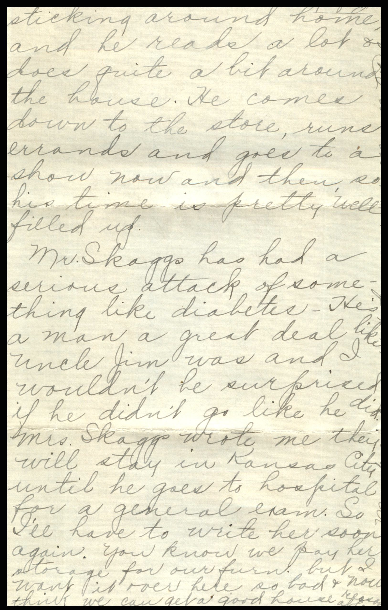
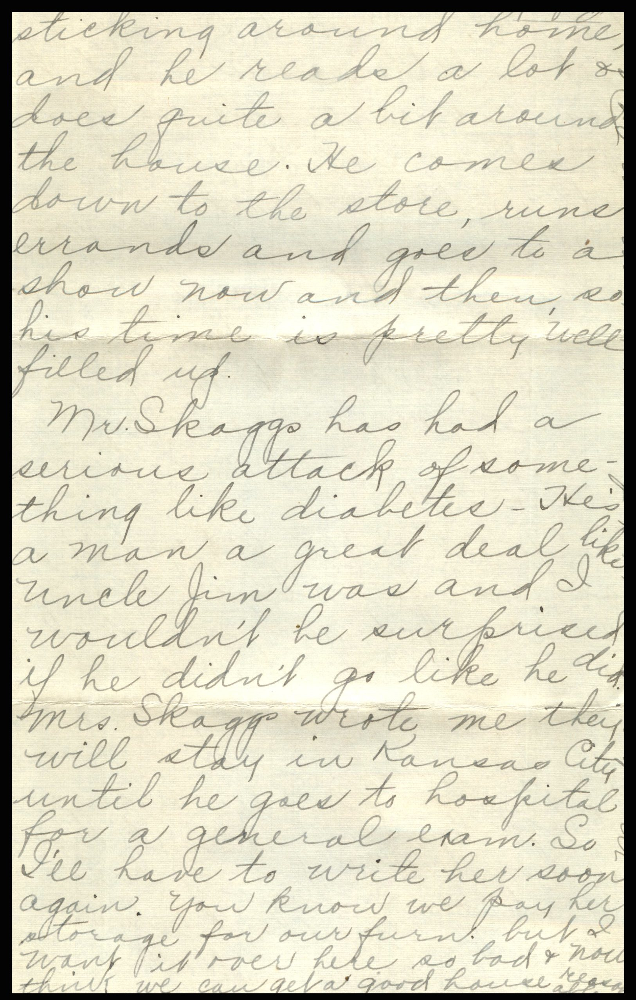

From: Ruby Chandler Mullholland, To: Jeanette Knox Chandler
{kind=link}


 
{kind=link}
 From: Ruby Chandler Mullholland, To: Jeanette Knox Chandler
Mailed From: Wichita, Kansas on December 26, 1930
From: Ruby Chandler Mullholland, To: Jeanette Knox Chandler
Mailed From: Wichita, Kansas on December 26, 1930
Mailing Address: Mrs. E.H. Chandler Pearl, Illinois
Return Address: Mrs. Sam Mullholland 427 E. Lewis Wichita, Kansas
The wrapper on your box came from Mae. She sent me a coral necklace and hose to Sam and Gene. Wichita, Kansas December 25, '30 Dearest Mama and Mart Since I have an hour or so left over I thought I'd get your letter answered today and let you know how we spent Christmas. We went down to Grove's and Inez's along about 10 am but had our own tree and gifts at home early this a.m. Inez had a small tree but we all exchanged candy except that they gave Gene gloves and hose. He also got 2 lovely pair of golf hose from Mae and Art and Bob gave him a dollar. He faired awfully well considering things. Sam gave me hose and I gave him a tie. We gave Gene a bugle, books and a drinking set. A girl here in town brought down a big box of chocolates with a note, "Mostly for Gene" on it. She came over to my house at El Dorado on Thanksgiving and ever since, she has been so generous. Kathryn Hutchinson is her name. I didn't even send them a card. I didn't miss very many though. I had a stack of them. An awfully nice one from Dr. Garrison. I noticed Mart had forwarded it from Pearl. Was glad to get a line from all the family so soon again. So I'll write them all and then I'll be all set to hear again. Don't be surprised when I tell you to change our address soon. We aim to get our furniture over in about two weeks and move into a house in the 3700 block on North Lawrence. But I'll let you know when we do. Just write here and I'll drop a line later. I don't know yet how long I'll be at Dr.'s as there is such a slump in business. He told me to come back though and I noticed he paid off several others as he wouldn't be needing them but of course even he doesn't know how business will continue. Sam will go to work for an oil Co. here Jan 1. Don't know his duties exactly - but its with oil rigs, etc. Which is something in our favor. We had a lovely dinner at Inez's. Grove had bought a turkey and Bob had one given to him through the Sheriff so he and his girl and a boy friend also a friend of Grove's besides us were there. Mae and Art didn't come because they thought Dick was to be at home and and he was sent to Ottawa, Kansas on a job this a.m. so Mae's plans were all broken into. They're rather at sea anyway on account of Mother Davis being so low. She can't get well now so its just a matter of how long her constitution can hold out. She surely is hearty - in frame that is - but has sinking spells and is bedfast. Inez has a colored girl so we didn't have to do much all day. We had turkey with dressing, asparagus - buttered, mashed potatoes, giblet gravy with hard boiled egg diced in it, cranberry jelly, pumpkin pie, cake, coffee and rolls. We had fruit cocktail made of grapefruit, orange, pears, peaches, and some cherry in it. We also had waldorfaud salad. This cook had put a little sweet pickle in the waldorfaud and it was awfully good for a change. We had celery too. So we had such a big dinner and no work and they wouldn't let me bring a thing. So it sure was easy on me. You know about how much time one has left when working. I made some candy last night and this a.m. and I'm going to mail a box to you and I was sorry not to get it to you before. I only sent Annie a story book but I think I can get a box of candy to her for New Year's Day. I just write her address c/o of State Hospital, Dixon Illinois. I never have had a line from them either so a person never can tell whether she gets anything or not. I was so glad to hear of Lucerne's baby doing better. I thought I might get a letter written to her too but owe one to Grace first, so I'll try and get it written tonight. We have had such nice rather the past week but it looks different tonight, like it might snow. But I guess we might expect winter from now on. Gene will be out of school for about then days so he'll get in a lot of play. He has two or three friends he visits back and forth with and I know their people are nice so I don't worry about him just so I know where he'll be all the time. He is awfully good about sticking around home and he reads a lot and does quite a bit around the house. He comes down to the store, runs errands and goes to a show now and then, so his time is pretty well filled up. Mr. Skaggs has had a serious attack of something like diabetes. He's a man a great deal like Uncle Jim was and I wouldn't be surprised if he didn't go like he did. Mrs. Skaggs wrote me they will stay in Kansas City until he goes to hospital for a general exam. So I'll have to write her soon again. You know we pay her storage for our furniture but I want it over here so bad and now think we can get a good house reasonable. Must quit now. Write soon. Hope all well. Lots Love, Ruby